Top 4 Recommendations
Lough Eske Castle

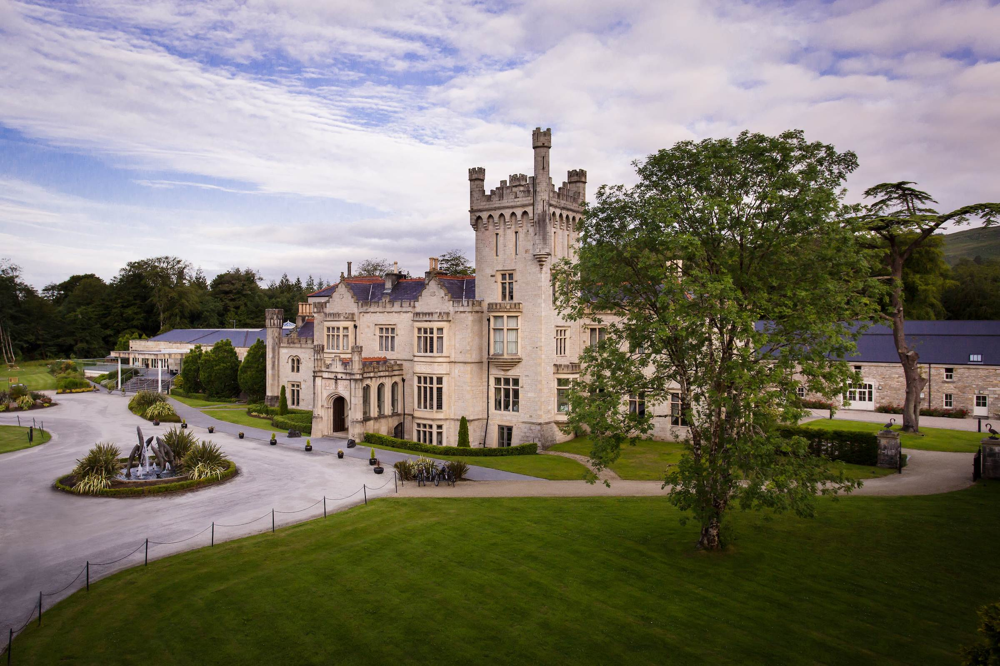
5* Historic Castle, Award Winning Spa on 43 acres resort setting, Superior accommodation and comfort. Winner of the World's Best Luxury Country Hotel 2009, 2010, 2011, 2012. Lough Eske Castle is the ideal place for the visitor who enjoys superior hospitality; the business traveller who wants modern day comforts and solitude to brainstorm; the wedding couple who want a WOW venue for their special day; and for the company who wants something different for their clients and employees.
Donegal Town
Co Donegal
Gateway Lodge

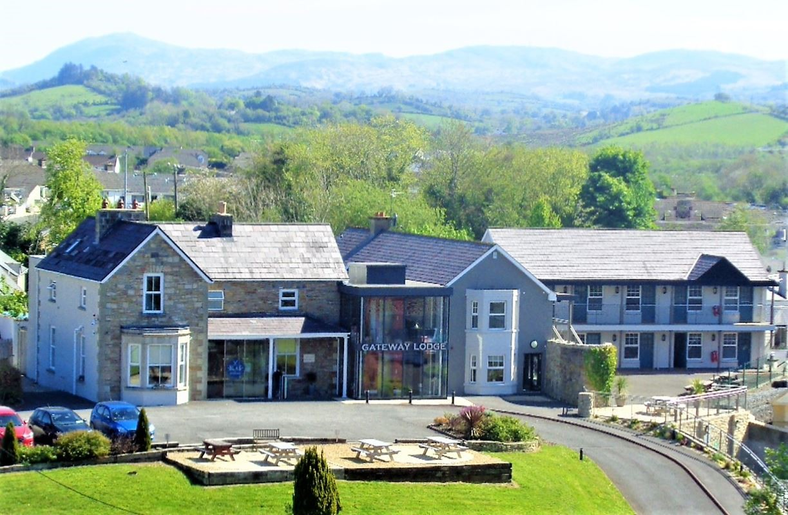
The Gateway Lodge offers guests the choice of multiple room configurations to suit their individual requirements and the perfect location to enjoy their time while in Donegal, we have 26 refurbished en-suite bedrooms offering super king beds, flat screen tvs, tea and coffee facilities as well as onsite parking for cars and coaches. Blas Restaurant at The Gateway Lodge Awarded Best In Ireland at the Good Food Awards 2017 Blas restaurant is located within The Gateway Lodge on the ground floor of the original Drumcliffe house dating from the early 1800's. The restaurant has been lovingly restored with an emphasis on retaining as many original features as possible and all of its charm. While staying with us you can sample from our award winning menus beginning with a fantastic breakfast menu sure to please everyone followed by an equally superb lunch and light dinner menu, all served daily from 8am - 5pm.
Donegal Town
Co Donegal
The Abbey Hotel

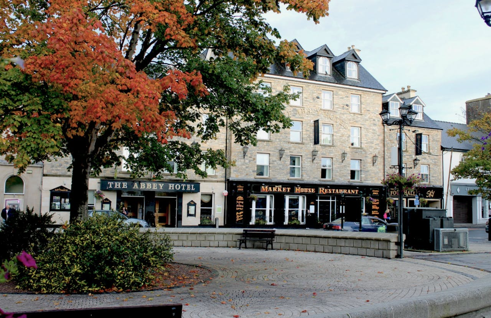
The Abbey Hotel is a 3-star property located in the town of Donegal, making it ideal as a base from which to explore Wild Atlantic Way on the beautiful North West Coast of Ireland. There are 117 rooms available including double, single, twin and family rooms. All the rooms have been recently refurbished and are nicely decorated. Some of them offer views of Donegal Bay the River Eske and the Diamond. Guests can dine at the Market House Restaurant located within the Hotel and relax and have a drink in The Abbey Bar Leisure facilities at the Abbey Hotel Donegal include the use of the Leisure Centre located in our sister Hotel the Central next door. For business guests, there are meeting facilities that can accommodate up to 600 people.
The Diamond
Donegal Town
Co Donegal
Dgl Town Hostel

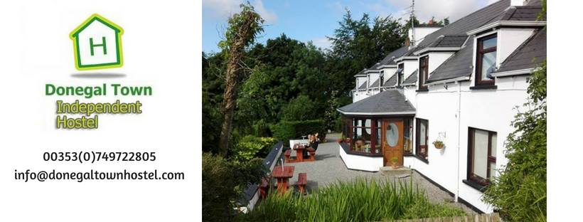
The Donegal Town Independent Hostel is a family run hostel is clean and friendly with lots of information available on Donegal town and county. The hostel has a self catering kitchen and common room with open turf fire. Dormitory and private and family rooms are available, some with en-suite facilities. We also have free wi-fi access. The hostel is located 1km from the centre of donegal town.
Doonan
Donegal Town
Co Donegal
Irene's Fun World

Irene's Fun World is a childrens indoor activity centre and is located a short 10 minutes walk from the Diamond. We have a separate activity area for babies & toddlers and is a safe place for them to play. The main playcentre is perfect for children up to 12 years of age. We also have a themed birthday party room for a fun birthday party experience. We also provide after school care. Our Cafe serves coffees, cappuccinos and a range cold drinks. We also have a food menu – choices including kids meals, sandwiches, paninis, toasties and much more.
Donegal Town Business Park
Donegal Town
Co Donegal
Winter: Thurs to Sat 10-5pm, Sun 11-6pm
Dgl Railway Centre

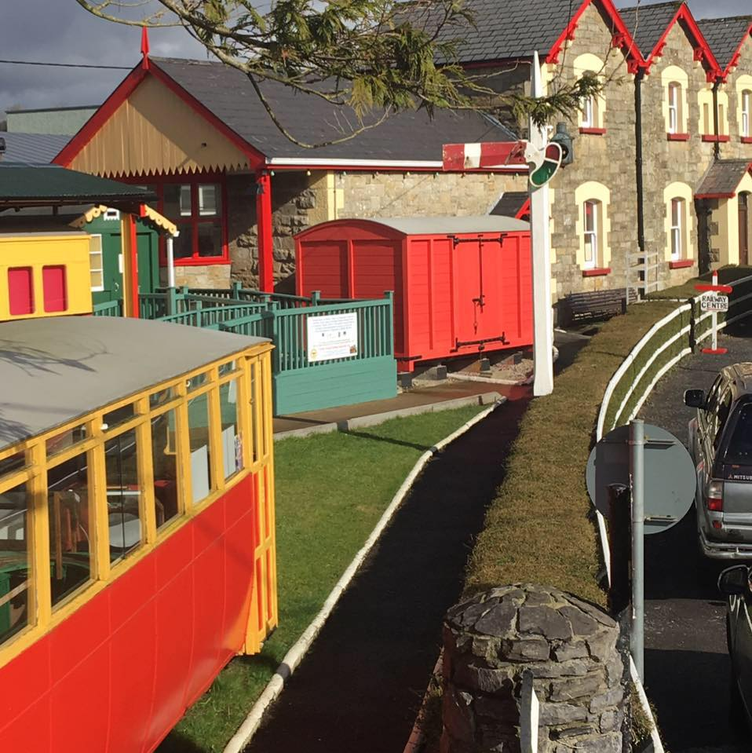
Donegal Railway Heritage Centre is considered one of the county’s hidden gems and is located just 300 metres from Donegal Town Centre. Whether you are a young family wanting to entertain the kiddos on a rainy day, a railway enthusiast or a person who loves to preserve local history. Donegal had the largest narrow-gauge railway network in the British Isles, and operated one of the first railway vehicles with an internal combustion engine in the world. Uniquely, this fascinating museum celebrating Donegal’s railway heritage, is based in one of the few remaining original station houses, which opened in 1889. The museum comprises of railway rolling stock, interesting artefacts, displays, a video presentation, model railways, a reference library, a shop and much more, including that famous Donegal welcome!
Tyrconnell
Donegal Town
Co Donegal
"Fairy" Bank Walk

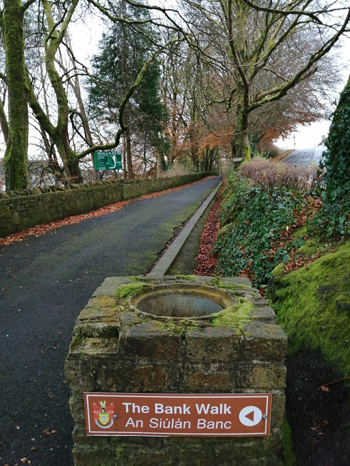
If you cross Boyce's Bridge on the Killybegs road you will come across the beginning of the Bank Walk to your left. This 2.5 km walk is a delightful way to relax for an hour or two. The Bank Walk follows the west bank of the River Eske as it empties into Donegal Bay and offers a stunning view of the Old Abbey Green Island and Donegal Bay. The walk commences just past the stone bridge on the Mountcharles Road on the left. Along the walk, there are dozens of fairy doors for the kids to find. Throughout the year, it holds various events, includings the fairies Christmas lights, the Easter Egg hunt and the Spooky Bank walk held at Halloween.
Donegal Playground

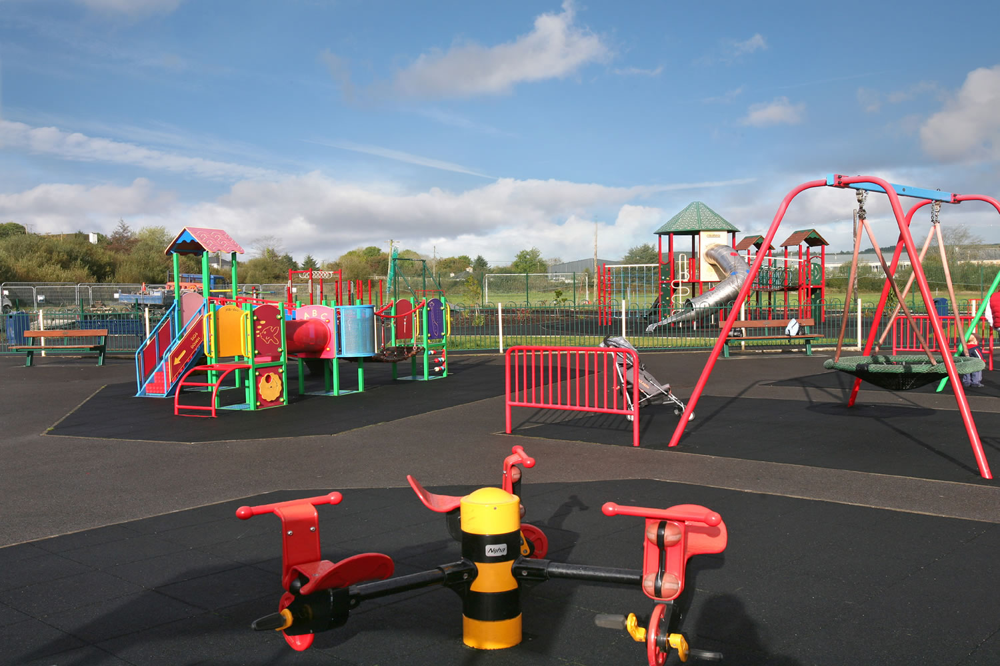
The playground in Donegal Town which is set behind the castle is near the St John Bosco Cente and the old Donegal Railway track. It is only a short 5 minute walk from the Diamond. Separated into 2 sections, there’s one for younger children with a climbing frame, swings, round-about and sit on rocking toys. Then for older children there is a zip-wire, basket swings, climbing frame with an enclosed slide, wooden adventure frame and more.You’ll find parking near the playground and entry is free.
Dgl Craft Village

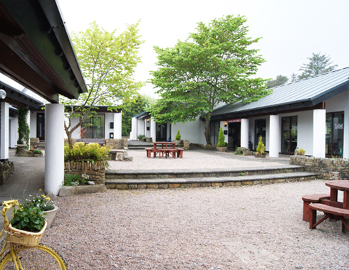
Donegal Craft Village is a showcase for contemporary arts and crafts in Ireland. Leading artisans are working with glass, bronze, textiles, wood, paint, ceramics and precious metals. Meet the artists in their workshops and treat yourself to the many items on offer for yourself or as a memorable gift. You can also commission special bespoke items or larger architectural pieces for presentations or corporate gifts. Stop off and indulge in the award winning ’Aroma’ Coffee Shop & Mini Bakery renowned for its freshly ground coffee, delicious home made cakes and gourmet lunches. The beautifully landscaped grounds include a picnic area, a charming courtyard and spacious, free car & coach parking.
Lurganboy
Donegal Town
Co Donegal
Winter: Tues to Sat 10-5pm
Donegal Town
Castle

Built by the O'Donnell chieftain in the 15th century, beside the River Eske, the Castle has extensive 17th century additions by Sir Basil Brooke. The Castle is furnished throughout and includes Persian rugs and French tapestries. Information panels chronicle the history of the Castle owners from the O'Donnell chieftains to the Brooke family. Limited access for people with disabilities to the ground floor. Location: In the Centre of Donegal Town. Guided Tours: Available every hour; Max. No: 35; Duration: 30 mins. Leaflet/Guide Booklet: English, Irish, French, German, Italian and Spanish.
Castle Street
Donegal Town
Co Donegal
Winter: Thurs to Mon 9.30-4.30pm
Dgl
Bay Waterbus

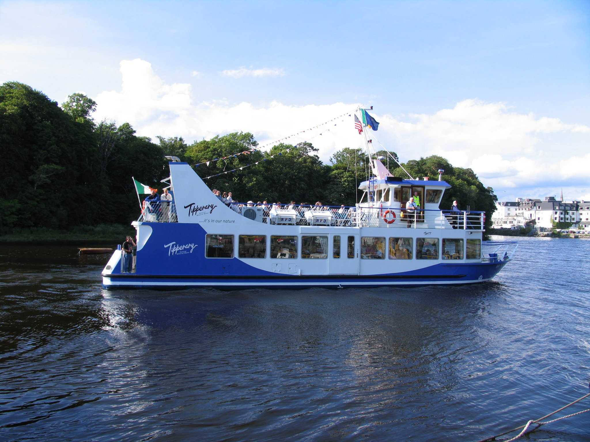
The Donegal bay Waterbus is an 80ft long pleasure boat with full bar,heating and air conditioning, ladies and gents toilets, which provides tours lasting approximately 80 minutes around beautiful Donegal Bay. There is a detailed live commentary on the history of the bay and on the wildlife of the surrounding area throughout the duration of the outward trip. On the return leg we have live entertainment comprising of music,song and craic!It takes in amazing views of the bay, the town, the Bluestack Mountains and the amazing seal island with over 200 seals. And as a treat for the kids the captain might even let you drive the waterbus!
Quay Street
Donegal Town
Co Donegal
Donegal Tours

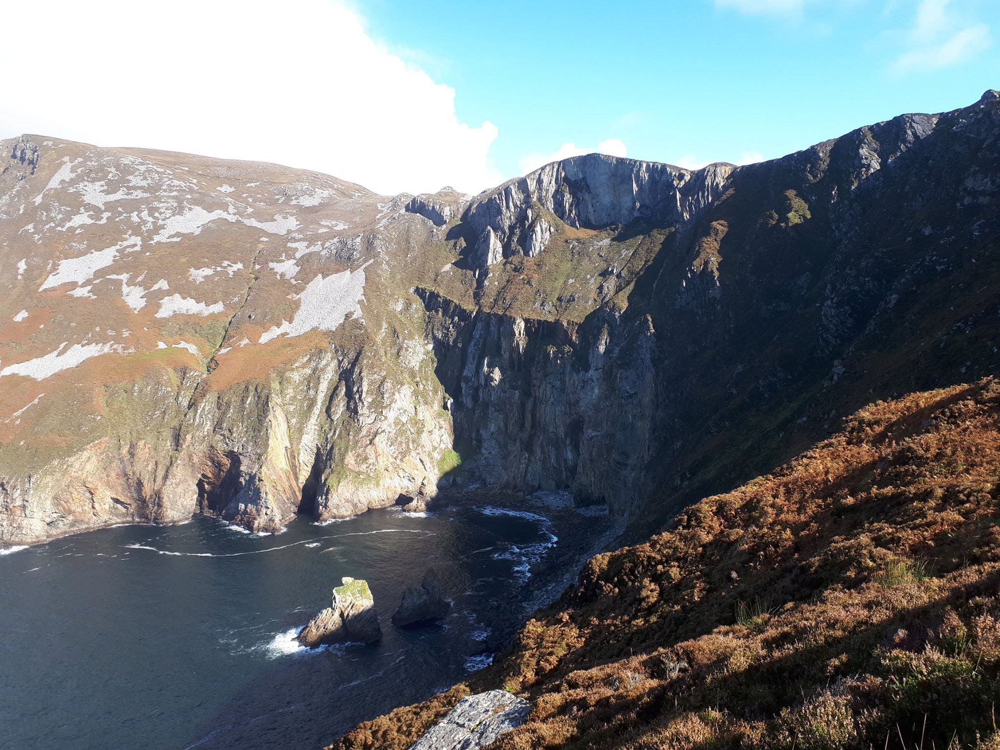
A 4 and half hour bus tour of Donegal Town, Muckross Point, Slieve League Sea Cliffs, Glencolmcille and the Folk Village. Muckross Head is reached by a beautiful, winding, country road, neatly tucked into the mountainside, and overlooks an idyllic horse-shoe beach leading out to the wide Atlantic Ocean. Slieve League Sea Cliffs are said to be the highest and one of the finest marine cliffs in the whole of Europe, and with a six hundred metre drop down into the wild Atlantic waves below they create a breathtaking, spectacular view. Glencolmcille and the Folk Village gives a wonderful insight into life in this isolated part of rural Donegal over the past 200 years with it's beautiful collection of traditional thatched cottages.
Ardsmore
Gortahort
Letterenny
Co Donegal
Departs Donegal at 10.30am
Returns Donegal at 4pm
McCafferty's
Bar

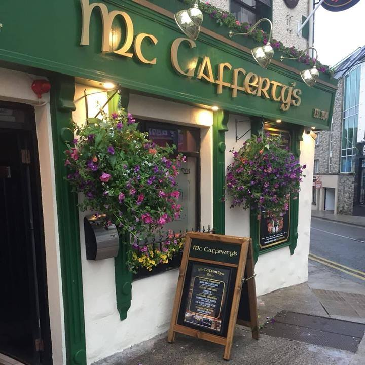
McCafferty's Bar is a well established hotspot for the revellers of the north west. Proving evermore popular among tourists who love the traditional Irish theme of the bar. McCafferty’s Bar is a wonderful authentic Irish pub in the heart of Donegal Town. Offering Sports & Live Music 7 Nights a Week.
The Diamond
Donegal Town
Co Donegal
Fri & Sat 11am-12.30am
Sundays 12.30pm-11pm
The
Abbey
Bar

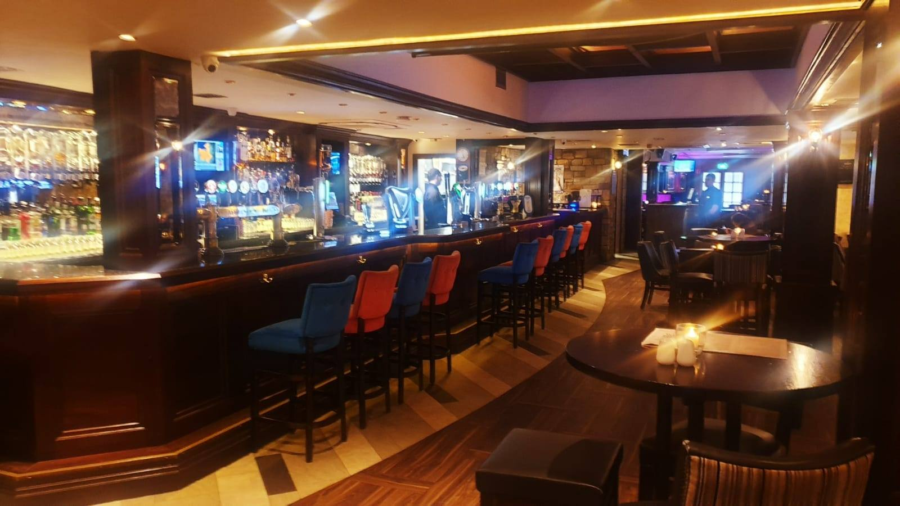
Conveniently located for the popular Wild Atlantic Way and overlooking Donegal Bay, our newly refurbished Abbey Bar offers a contemporary, lively and vibrant venue, very popular among Donegal locals and guests alike. Modern and comfortable, our newly designed unique two-level bar is a great place to meet up with friends and enjoy the sounds of traditional Irish folk music. The Abbey Bar is also a popular venue among guests where they can relax enjoy an informal bite to eat from our Bar Food Menu. Sky Niteclub is open every Saturday Night for the Best in Dance Music. Open Sunday nights during the Summer months.
The Diamond
Donegal Town
Co Donegal
Fri & Sat 11am-2.30am
Sundays 12.30pm-11pm
The
Forge
Bar

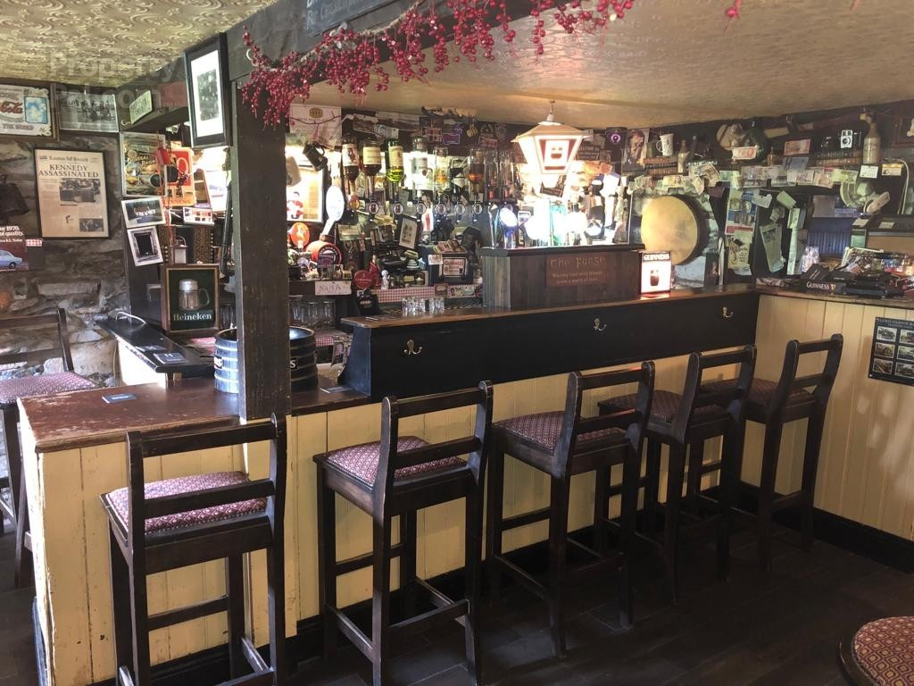
The Forge Bar was voted 2018 Ulster Pub of the Year by the Irish Bar & Restaurant Association. Renowned throughout the North West as one of the most cosy atmospheric pubs oozing with character and enjoying an excellent local and tourist business. Situated just 300 metres from The Diamond and close to numerous Restaurants and Accommodation. Originally built in the 1700’s, the premisesw was completely refurbished in 2004 yet retaining it’s original character. The staff are friendly and fun, and the bar is sweet and comfortable. There is always a fire in the hearth, especially welcome in the colder months of the year. Live music every Friday night.
Meetinghouse St
Donegal Town
Co Donegal
Fri & Sat 4pm-12.30am
Closed Sundays
Dom's
Pier
1
Bar

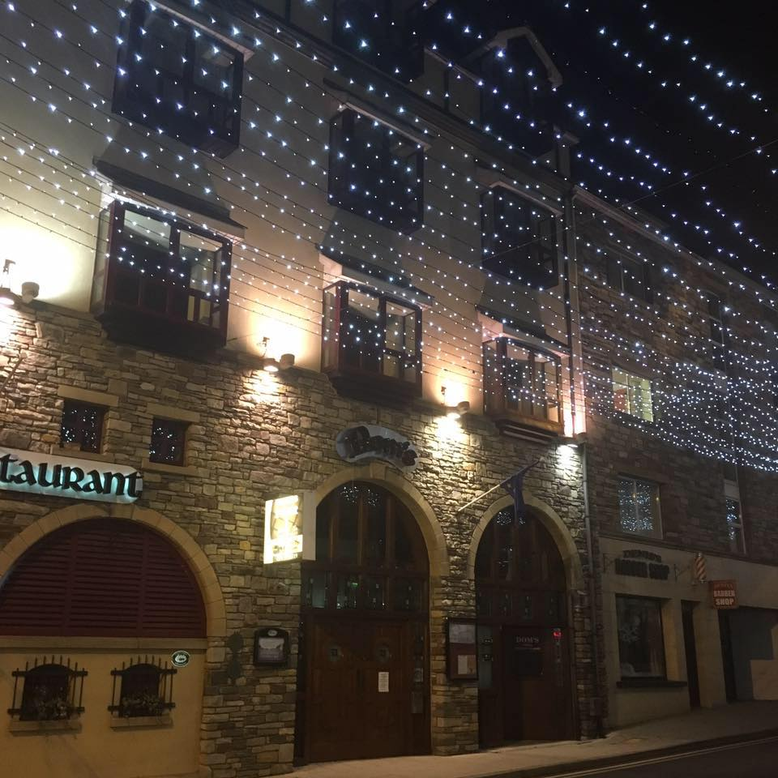
Perched on the shores of Donegal Bay just a short walk from the Diamond, Dom's is the place to Eat, Drink & Relax in Donegal Town. Our Restaurant has stunning views of Donegal bay and its piers and with dining from 12noon till late seven days a week it is a must for locals and visitors alike. Our large and lively bar with its extensive range of beers, wines & spirits is the perfect place to meet friends for a night out or just to relax and sip a coffee. Live sport on multiple screens. Live Music every weekend. If you ever come to town you have to be able to say..." I've been to Dom's"...See you soon!
Quay St
Donegal Town
Co Donegal
Fri & Sat 12-12.30am
Sundays 12.30pm-11pm
Harbour
Restaurant
 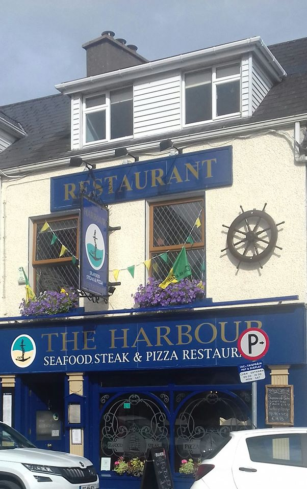
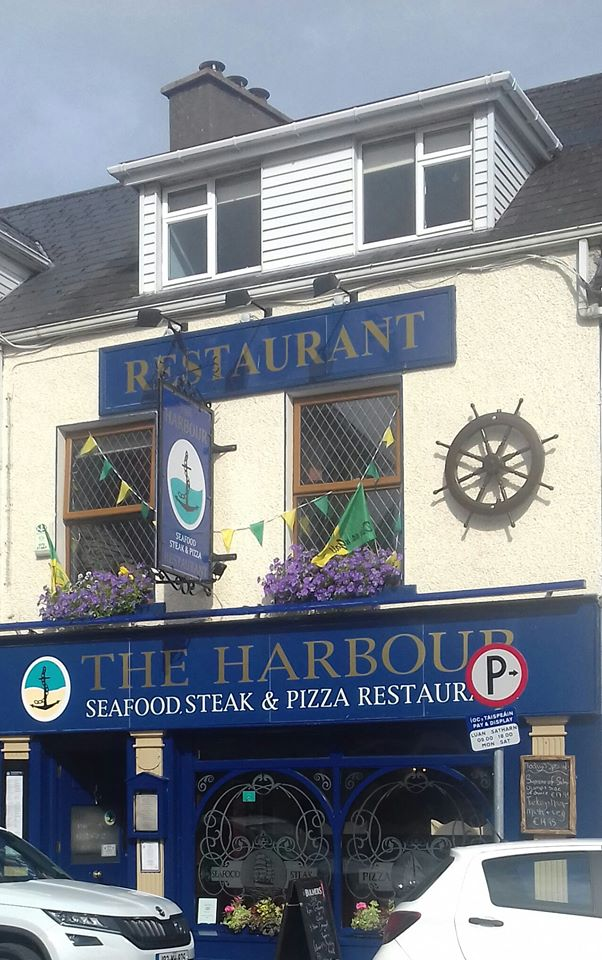
At The Harbour Restaurant and Bar you can choose from a full a la carte menu or daily specials offering the best seafood in town. The early bird menu is available from 17:00 to 18:30 Monday to Saturday. There is also a children’s menu, takeaway options and a fully licenced bar with a variety of wines to choose from. Upstairs there are two private function rooms with separate entrances and both rooms have their own bars. There is available parking adjacent to the restaurant in a large car park.
Quay St
Donegal Town
Co Donegal
Sundays 12pm-10pm
Chandpur
Indian
Rest
 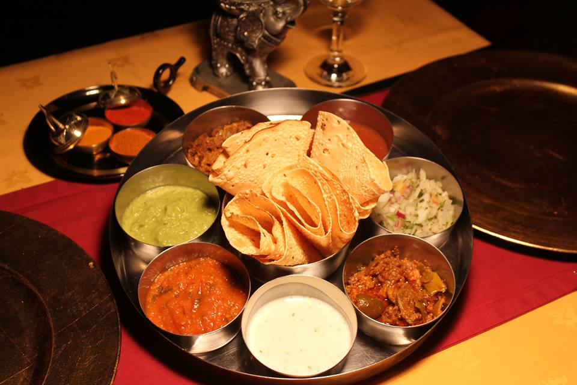
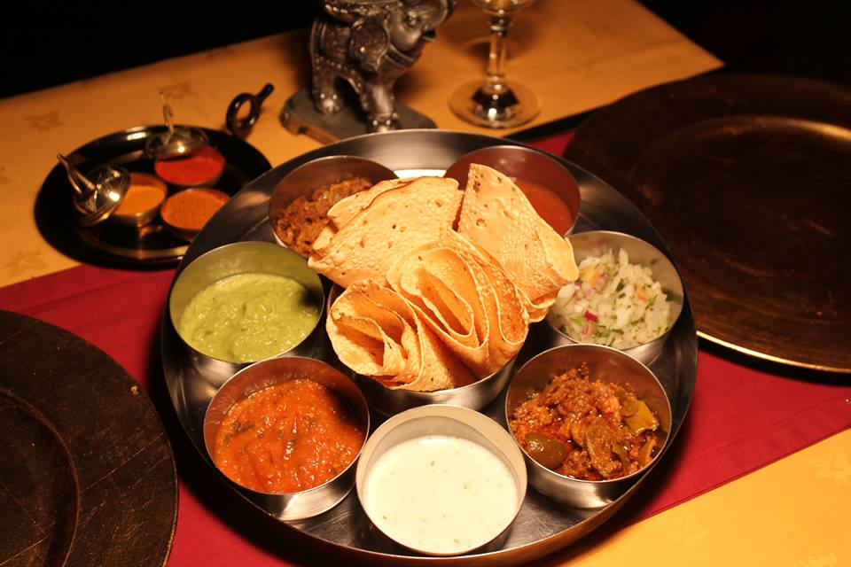
This beautifully decorated restaurant in Authentic Bangladeshi style oozes warmth and ambiance. From the moment you walk in the door you are transported to another world, with the aroma of the award winning food to the sumptuous décor, customers can relax and enjoy the wonderful dishes on offer, accompanied by select wines and beers from around the world. Chandpur is not just a restaurant; it is an experience that offers customers exceptional food and genuine hospitality with affordable prices that keep customers returning time and time again. It is easy to see why this restaurant keeps getting rave reviews and awards.
Main St (Car Park Entrance)
Donegal Town
Co Donegal
Sundays 1pm-10pm
La
Bella
Donna
Rest
 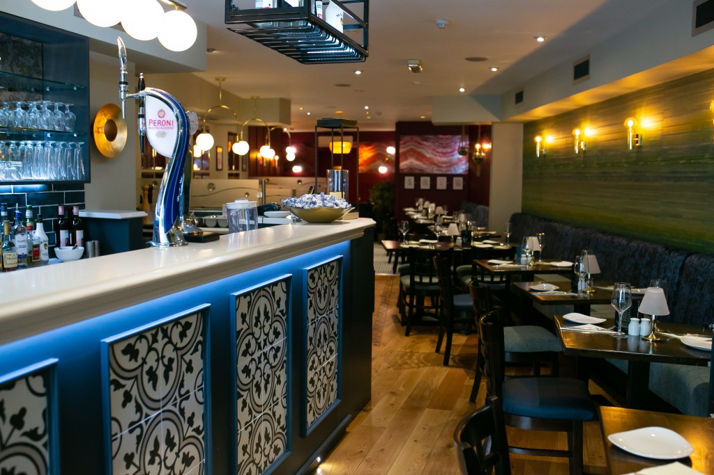
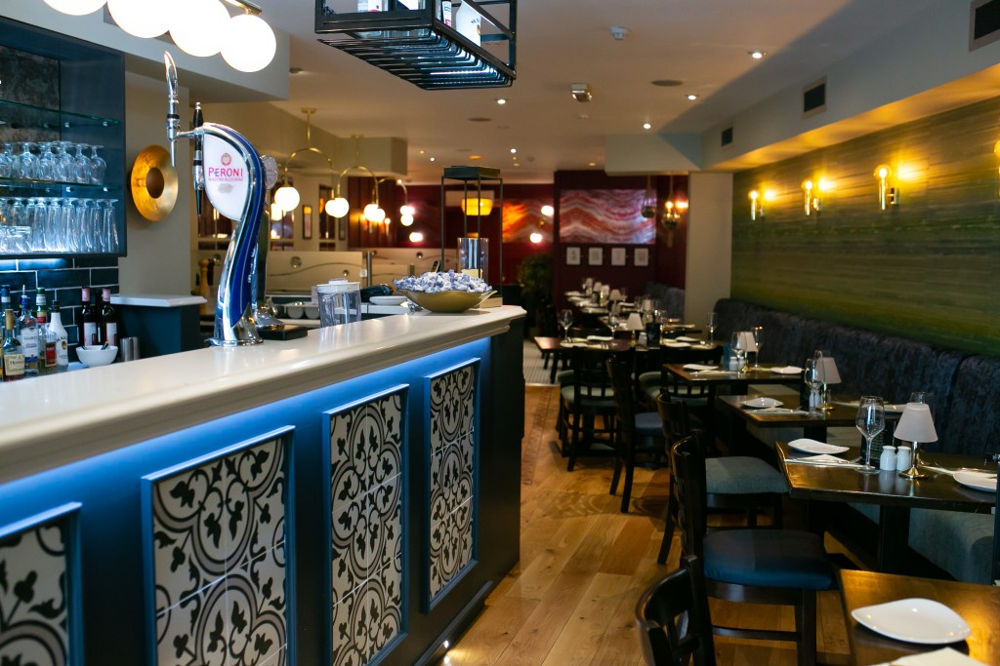
The first of its kind, this establishment gives a new meaning to ‘eating in style’. With its elegantly furnished interior, two spacious bars and ambient atmosphere, everyone will feel at home in this little corner of Italy down by the river. You can choose from an extensive selection of pasta, pizza, salads, steaks, chicken and seafood. The latest addition to the La Bella Donna experience is our Bellini Cocktail Bar. Located above the main restaurant, the bar offers views of the beautiful River Eske and Donegal Bay. It is an ideal space for a quiet catch-up over a few cocktails or glasses of wine, where we offer a Lite Bites version of our main restaurant menu. We also welcome bookings of larger parties to this space.
Bridge St
Donegal Town
Co Donegal
Fri & Sat 5pm-10.30pm
Sundays 5pm-10pm
4
Lanterns
Takeaway
 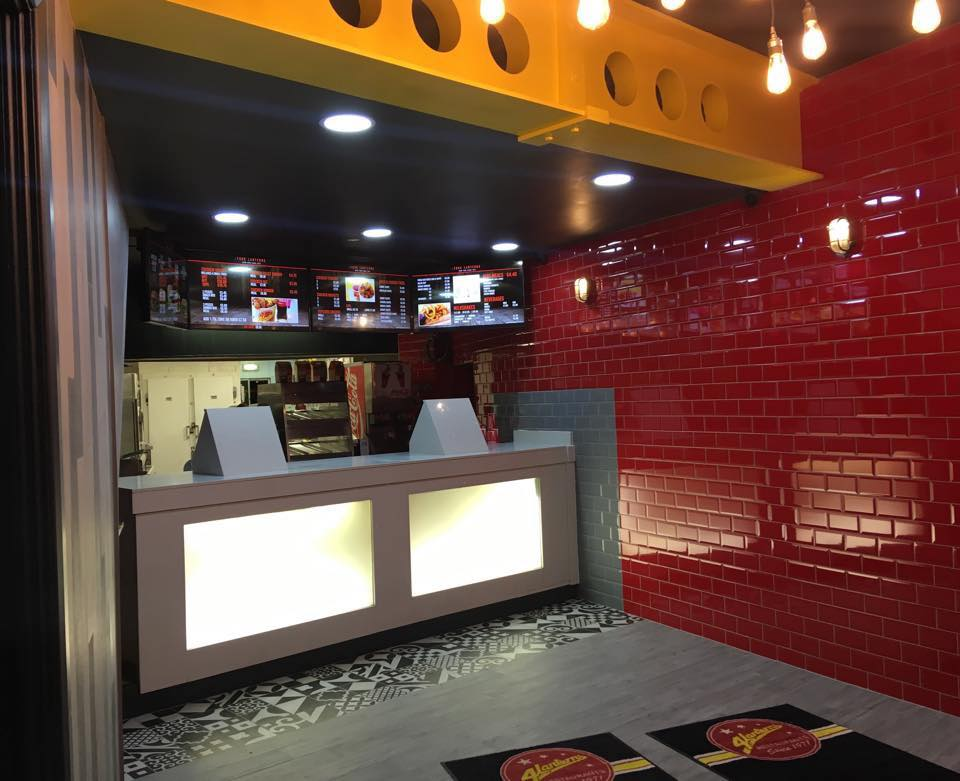
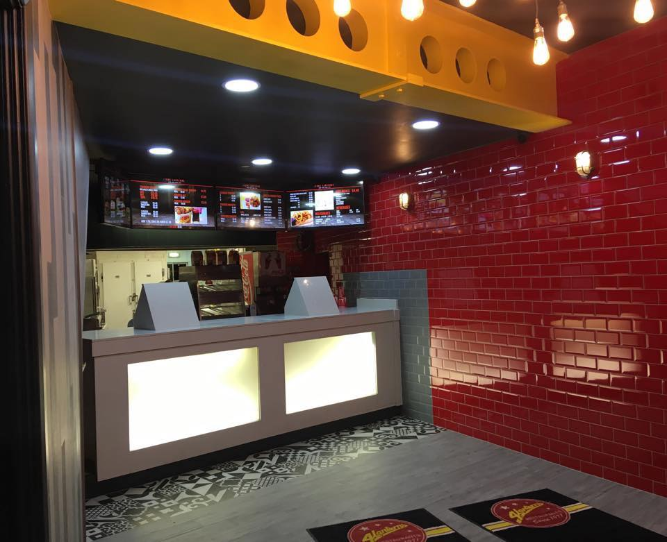
This wonderful Irish & International takeaway serves a wide range of items such as Chicken Curry, tasty Fish & Chips and also regularly has weekly special deals. Four Laterns is famous for its Big Four burger throughout the northwest. Why not treat yourself to a late night burger after a night out in Donegal Town.
Quay St
Donegal Town
Co Donegal
Friday: 12.30pm-1.30am
Saturday: 12.30pm-3.30am
Sunday: 4.30pm--11.30pm